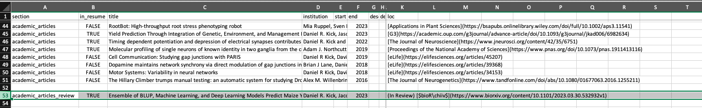
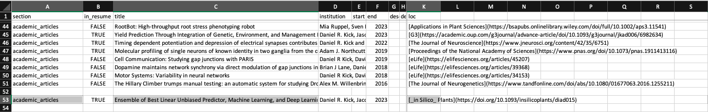
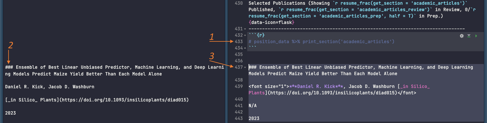
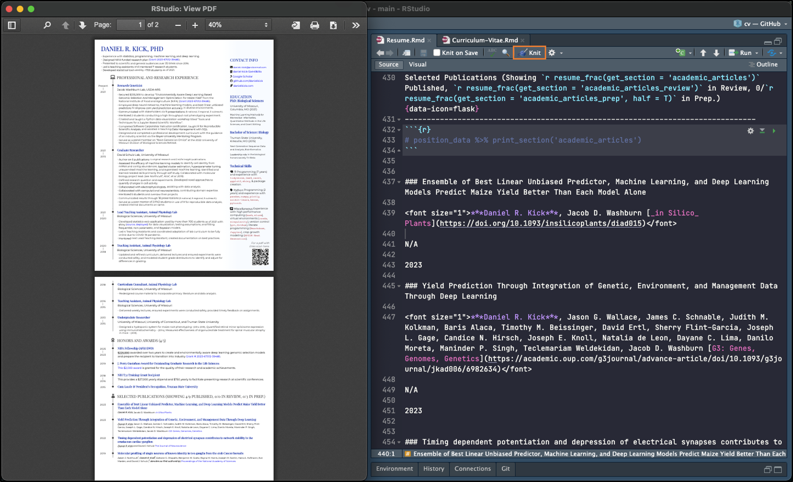

today <- as.Date(format(Sys.time(), "%Y-%m-%d")) # Get today's date
start_R <- as.Date("2017-01-29") # Set starting date
days_diff <- difftime(today, start_R) # Calc. days elapsed
years <- as.numeric(days_diff) / 365 # Convert to years
years <- round(years) # Round
yearsUse a spreadsheet to manage your CV & Resume
professional development
r
For the past year I’ve been using a spreadsheet and RStudio to manage my resume and curriculum vitae. This post is a pitch for why you might want to do this and an overview of the system. There will be a follow up post on how to get started if you decide to use his approach.
Why use a spreadsheet?
The key reason why you should use a spreadsheet to manage your resume is that it enables easy filtering and sorting. In essence your spreadsheet becomes a personal work history database from which you can quickly retrieve entries relevant to the application at hand.
If instead all your experiences went into an all encompassing text document, tailoring a document to a position would require you to go through each section and cut out most of the entries. To be clear – there are far worse strategies out there. Having a single reference document keeps your information together and means that much of your formatting work is done ahead of time.
This is where RStudio comes in. Rmarkdown gives you a way to draw entries from your spreadsheet, filter them, and then turn those entries into beautifully formatted text. Not to mention that you can have R update text for you1.
Overview
Let’s see how this works. All the code and data for my resume and cv is on GitHub. Every time I update the spreadsheet or tweak the documents’ aesthetics I add a commit.

Updating the documents is a 4 step process that takes just a few moments. Earlier this month when a paper of mine was accepted. To update my documents I…
- edited the
positions.csvdocument and added a row with the paper’s bibliographic information and url. - opened my Rmarkdown files
Curriculum-Vitae.RmdandResume.Rmdandknitthem to pdfs. - copied the output pdfs to a second repository to share with others
- commited and pushed these new documents to GitHub (and then did the same for the
cvrepository)

You might be wondering – what’s with the last two steps? Why move the documents and then push to GitHub instead of keeping them where they are? And why put these on GitHub in the first place?
Putting these on GitHub (or online for that matter) makes it easy to go from your resume to your online presence (LinkedIn, Orcid, personal website, etc.) from links in your resume. This means that if you embed a link to your resume in your resume then every paper copy you hand out and every business card links to the most up to date version.

Using a second repository is just to have a cleaner presentation. Every file that isn’t your resume is a distraction – and if your recipient wants to see your GitHub they’ll be just one click away.
A More Detailed Look:
Let’s take a look at positions.csv.
The first column, section, is the categories in your document. Several categories might be presented together (e.g. national_presentations and regional_presentations) but they aren’t assumed to be. The next column, in_resume, is a simple filter. Everything goes into the curriculum vitae, not so with the resume. Next we have institution. This one is a little odd because it includes university or organization names but also lists of authors (e.g. row 44). This is because all the items in this column are formatted the same way. After showing the title of an entry, we want to show this information. Dates are included using the start and end columns and location information (here urls) in loc. Finally, are several description_ columns. Extra information you want can be added to these.

When I updated this spreadsheet I already had an entry from when I submitted the paper and put it $bioR\chiiv$.

Only three cells had to change, moving it from the in review section to the academic articles section, tweaking the title, and updating the url.

In RStudio, the CV is ready to go. All I had to do was click the Knit button and wait for the pdf.
The resume took ever so slightly more work. For space and aesthetic reasons I use a non-default formatting for my publications. This is a manual step but is not hard at all. All I did was:
- Read in the position data and run line 433
position_data %>% print_section('academic_articles'). This produces markdown formatted text. Each line of text is treated as a separate “item” and will be formatted according to some rules. - Copy the markdown formatted text for the new publication.
- Paste it into the document and tweak the formatting:
- Use a smaller font size for everything between
<font size="1">and</font>. - Bold my name using
*** - Display authors and link together as the second line and don’t apply the third line’s formatting rules to anything (
N/A)
- Use a smaller font size for everything between

With those edits made I click the “Knit” button again et voilà! Resume updated and ready to go.

Bonus: Updating values in the text
One of the coolest tricks you can do if your resume is in R is to update text dynamically. You don’t have to search through and count how many students you’ve mentored, or papers you published2.
Here’s a simple example. I want to include how long I’ve been using R, but I don’t want to have to update that by hand. You could calculate this in R like so:
RMarkdown let’s you embed this calculation in the text. In my documents I have something like this “R Programming (7years )” which will show up in the pdf as “R Programming (# years)”.